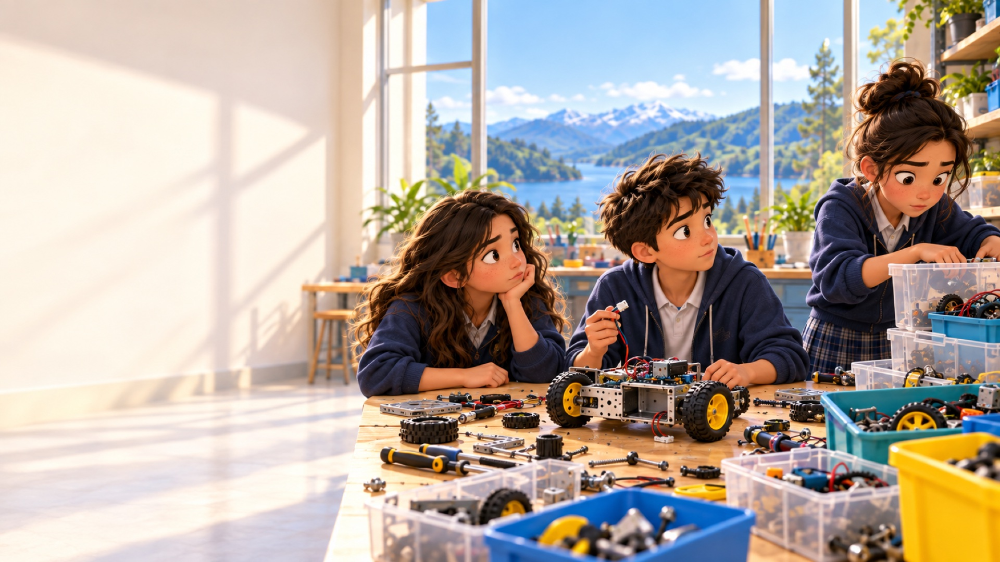
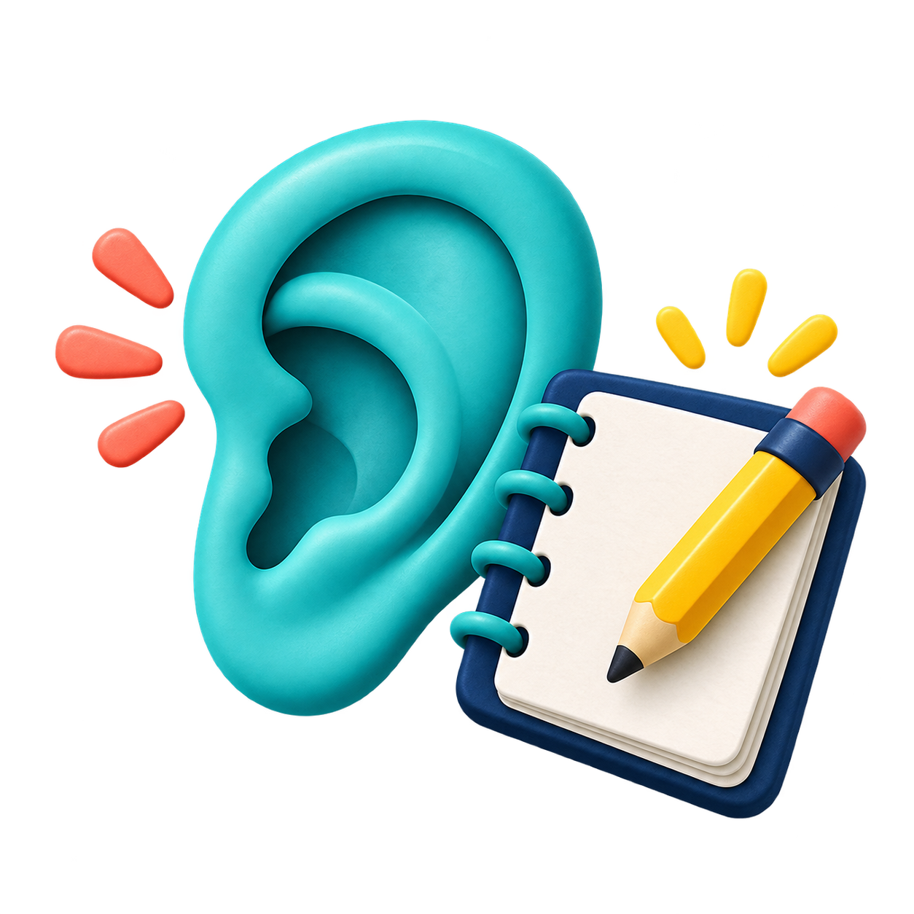
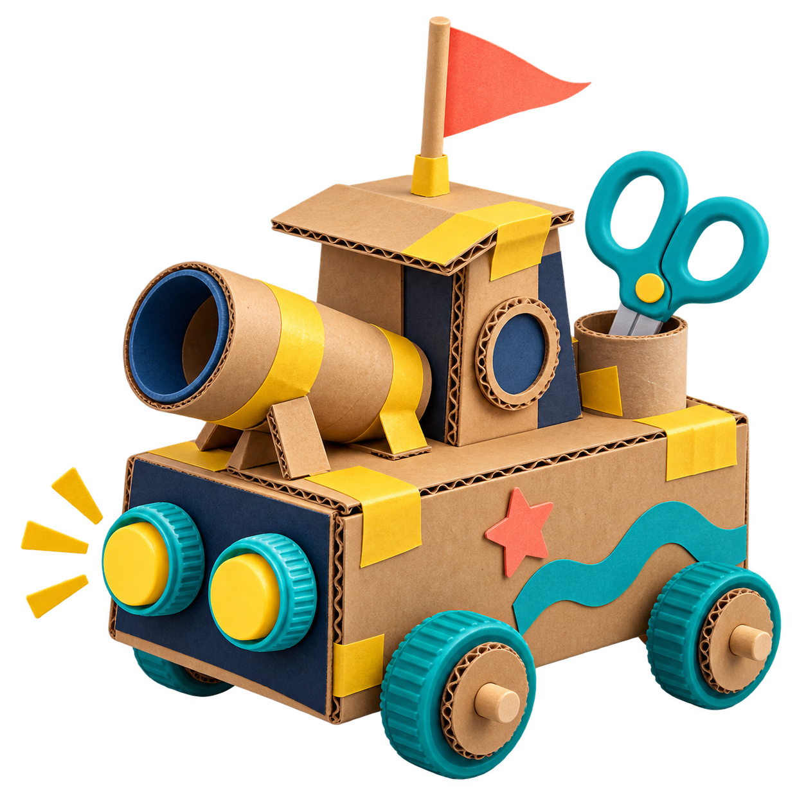

PREGUNTA CLAVE

PRIMER PASO · OBSERVAR
Cuatro pistas. Ninguna solución todavía.
1 Agua que se pierde2 Residuos mezclados
3 Espera en el kiosco4 Mochila muy pesada
LO QUE VEMOS ≠ LA CAUSA. Una pista no es todavía un problema entendido.

Queremos llevar nuestro robot a FIERTEC.
Para mostrarlo, primero necesitamos probar que funciona.
Vemos la dificultad.
Todavía falta entender por qué ocurre.

LA MISMA HISTORIA · LAS PERSONAS
Antes de diseñar: observa y escucha
El mismo taller puede verse distinto según quién lo use.
Quien construye¿Cuándo deja de trabajar para buscar?
Docente¿Qué piezas cuesta encontrar?
Quien devuelve¿Dónde deja lo que usó?
Observar + escuchar + registrar.
Entender qué necesitan abre mejores ideas.
«Necesitamos una app» ya elige una solución. Primero aclaremos la dificultad.

PREGUNTAMOS¿Qué pasa al buscar y devolver las piezas?NECESIDAD POR CONFIRMAREncontrar y devolver materiales sin interrumpir el trabajo.
Es una hipótesis: escuchar y observar más puede cambiarla.
Ahora caben distintas respuestas: orden, señales, nuevos hábitos o tecnología.
Diseñar pensando en las personas.
Design Thinking: entender antes de construir; probar para aprender.
 Observar¿Qué ocurre?
Observar¿Qué ocurre?- Comprender¿A quién afecta?
- Definir¿Qué necesita?
 Idear¿Qué podríamos hacer?
Idear¿Qué podríamos hacer?
PrototiparHacer algo pequeño. ProbarVer cómo lo usan.
ProbarVer cómo lo usan. Aprender¿Qué cambiaríamos?
Aprender¿Qué cambiaríamos?
Podemos volver atrás. Aprender cambia lo que entendemos.
Esta es nuestra guía para la charla, inspirada en empatizar, definir, idear, prototipar y probar. No es una receta rígida.

LA MISMA HISTORIA · USO REAL
Una solución debe funcionar en la vida real.
Una etiqueta puede parecer clara en el papel y fallar en el taller.
 ¿La ven? La señal destaca desde donde trabajan.
¿La ven? La señal destaca desde donde trabajan.
 ¿La entienden? Una persona nueva reconoce la caja.
¿La entienden? Una persona nueva reconoce la caja.
 ¿La usan al devolver? El orden sigue funcionando al terminar.
¿La usan al devolver? El orden sigue funcionando al terminar.
No basta con preguntar «¿te gusta?». Observemos qué hace.
DESIGN THINKING · PROTOTIPAR
Un cambio pequeño para aprender
PROTOTIPO ≠ PRODUCTO TERMINADO. Es una versión pequeña para aprender.
LO QUE QUEREMOS SABER¿Alguien nuevo encuentra y devuelve la batería sin ayuda?
HOY
Todo mezclado
PRIMER PROTOTIPO
 RUEDAS
RUEDAS CABLES
CABLES BATERÍAS
Tres señales claras
BATERÍAS
Tres señales claras
LA MISMA HISTORIA · PROBAR
¿Cómo sabremos si ayuda?
La misma tarea, dos versiones del taller.
ANTESCaja mezcladaBuscar y devolver la batería
CON EL PROTOTIPOCajas señalizadasBuscar y devolver la batería
 ¿CUÁNTO TARDA?Tiempo de búsqueda
¿CUÁNTO TARDA?Tiempo de búsqueda
 ¿DÓNDE DEVUELVE LA BATERÍA?Lugar de devolución
¿DÓNDE DEVUELVE LA BATERÍA?Lugar de devolución
Es un plan de prueba. Todavía no tenemos resultados.
LA MISMA HISTORIA · APRENDER
NO FUNCIONÓ.
APRENDIMOS.
Vimos algo que nuestra idea no había considerado.
OBSERVAR → ENTENDER → CAMBIAR → VOLVER A PROBAR
Preguntamos¿Qué vio? ¿Qué entendió?
CambiamosProbamos otra señal.
Probamos otra vezObservamos si ahora ayuda.
DE LA IDEA AL VALOR
Una idea no es innovación solo porque sea nueva.
Proponer señales para las cajas.
Solo si, al usarlas, una prueba muestra que ayudan.
Una opción, no una obligación.
GENERAR VALOR ES MEJORAR ALGO PARA ALGUIEN. En el taller: buscar menos y devolver mejor. Hay que comprobarlo.